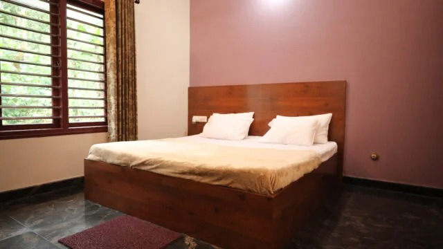
Garden-View Bedroom
Comfortable private room for couples and families, with attached bathroom and a peaceful view outside the windows.
Coffee estate homestay in Chikmagalur
Stay at Galimale Homestay near the hills, with clean garden-view rooms, homemade Malnad-style food, campfire evenings and easy access to popular Chikmagalur sightseeing routes.
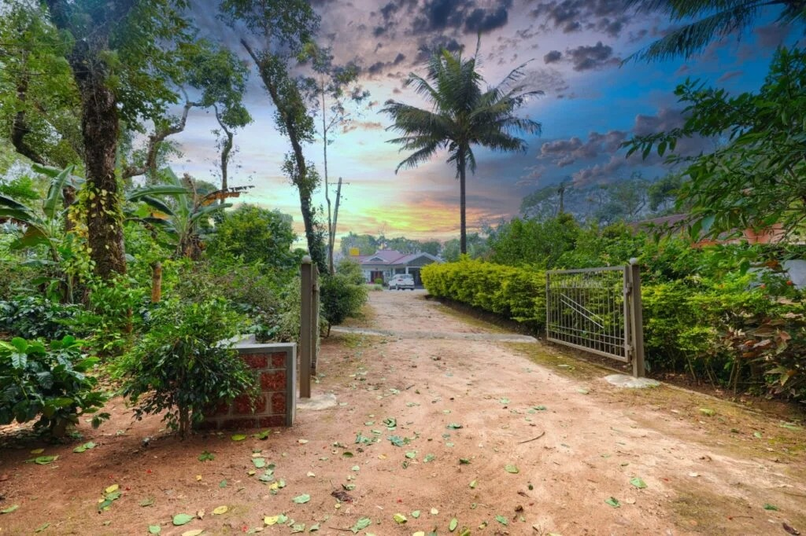


Why guests choose Galimale
Most guests booking a homestay want three things: clean rooms, good food and a location that feels close to nature without making the trip difficult. Galimale is built around that simple promise.
Comfort, without losing the estate feel
Confirm the exact package on WhatsApp, especially during weekends, holidays and peak travel dates.
Rooms and food

Comfortable private room for couples and families, with attached bathroom and a peaceful view outside the windows.

A practical option for friends and larger groups who want to stay together and spend more time outdoors.

Attached bathrooms with modern fittings, dry/wet area, western commode, mixer and wash basin.
Food and campfire
Vegetarian and non-vegetarian packages can be discussed while booking. Lunch and dinner are usually planned on prior request.
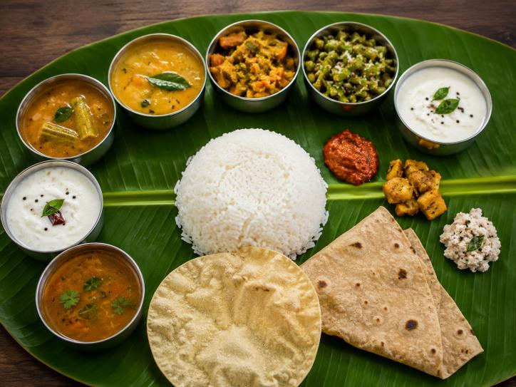
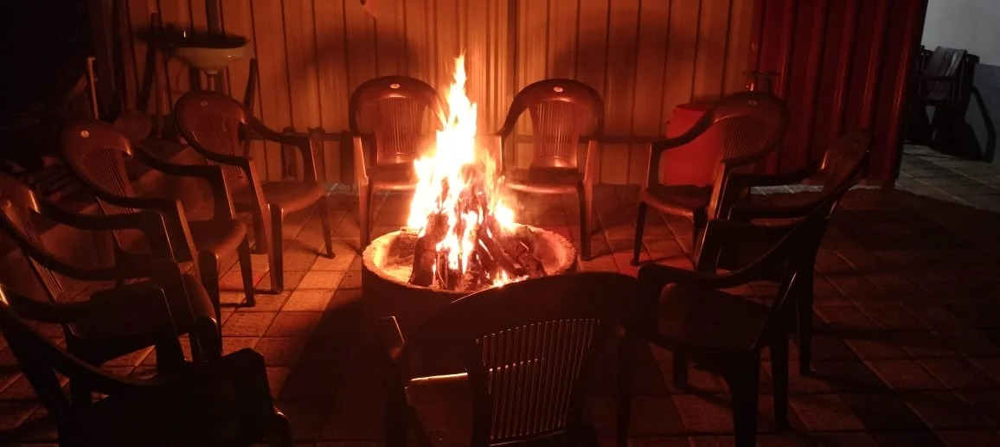
Chapati with veg saag, rice with sambar, curd rice, papad, pickles, payasa, ghee rice with veg kurma or paneer gravy, fried rice, rasam, sweets and fruits.
Chapati with chicken curry, veg saag, rice with sambar, curd rice, ghee rice with chicken chops gravy, chicken pepper dry, biryani, raita, kabab and boiled egg.
Check-in from 2:00 p.m., checkout at 11:00 a.m., with lunch, evening coffee and snacks, dinner, morning coffee and breakfast options.
Campfire can be provided for the evening. Music is allowed till 10:00 p.m. at a moderate volume. Starters and extra items cost extra if required.
Private estate viewpoint
Our private viewpoint is inside our own estate, a short walk from Galimale Homestay. Guests can enjoy sunset views, a private trekking spot and a cave temple within walkable distance.
100 meters away
The viewpoint is private to our estate, so guests do not need a long drive for mountain views. It is ideal for sunset photos, morning mist, quiet sitting time and easy nature walks close to the rooms.
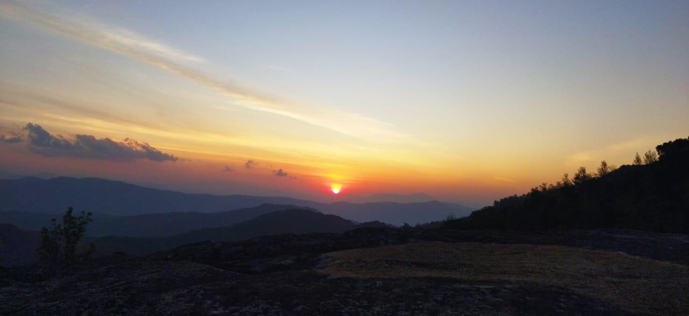
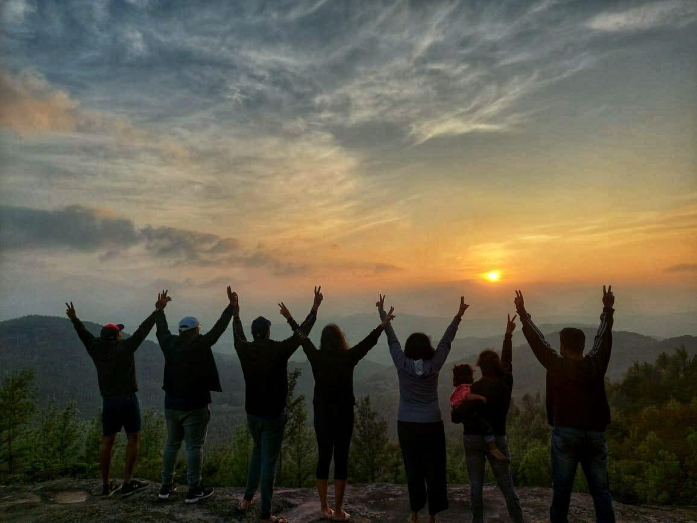
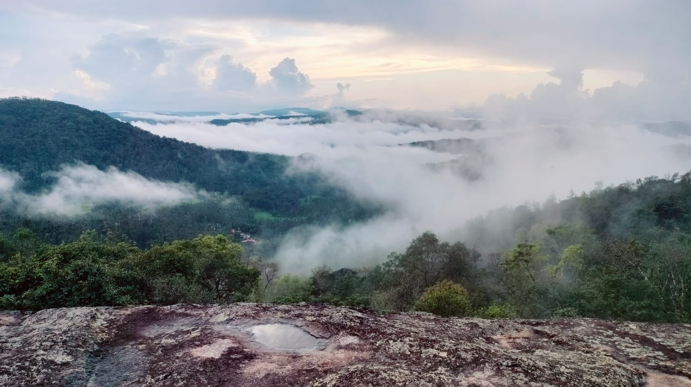
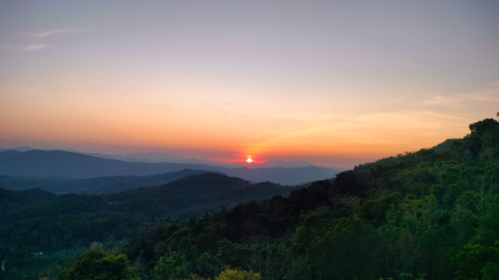
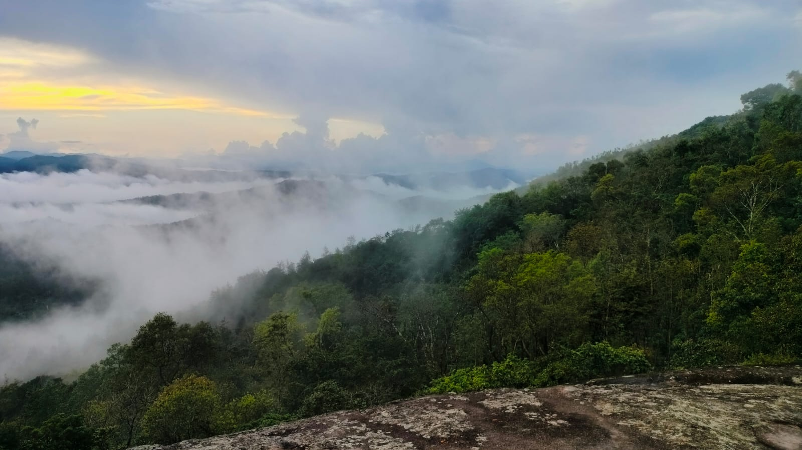
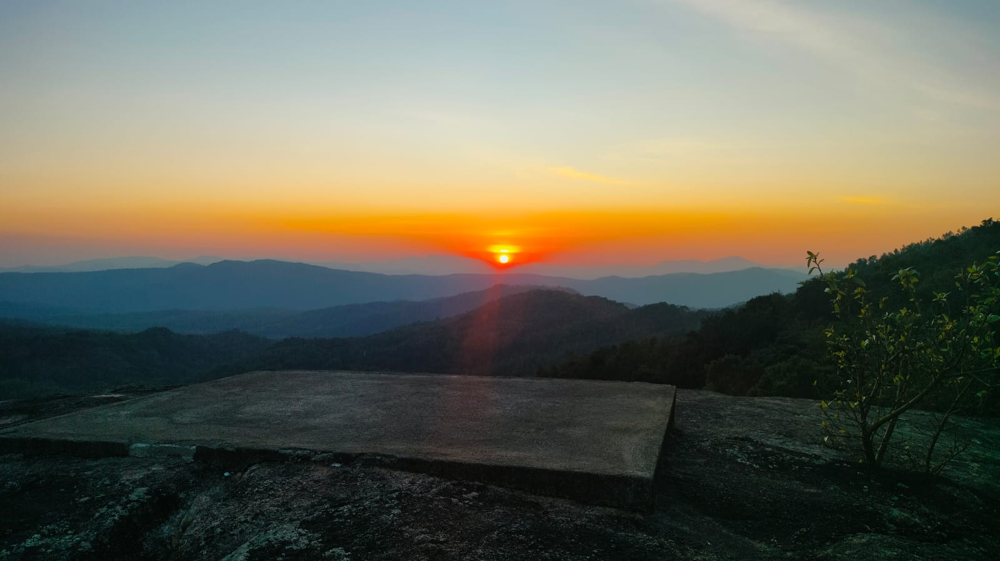
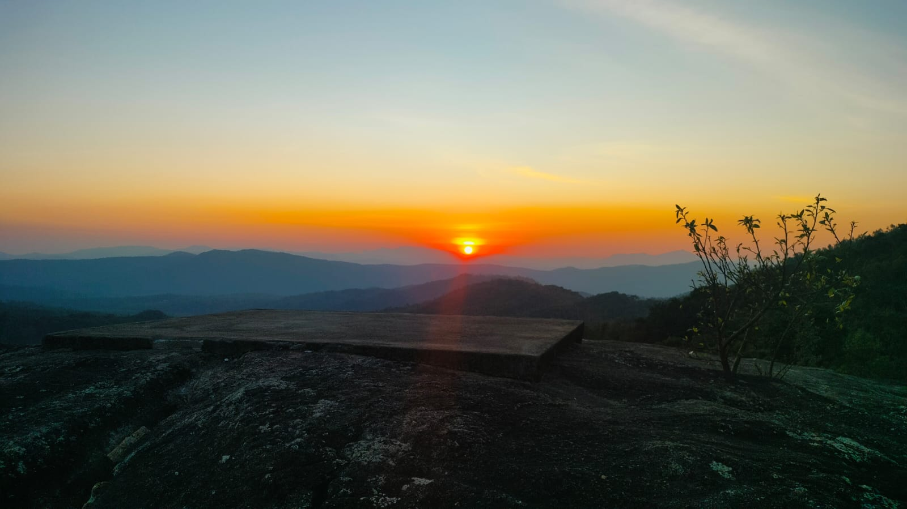
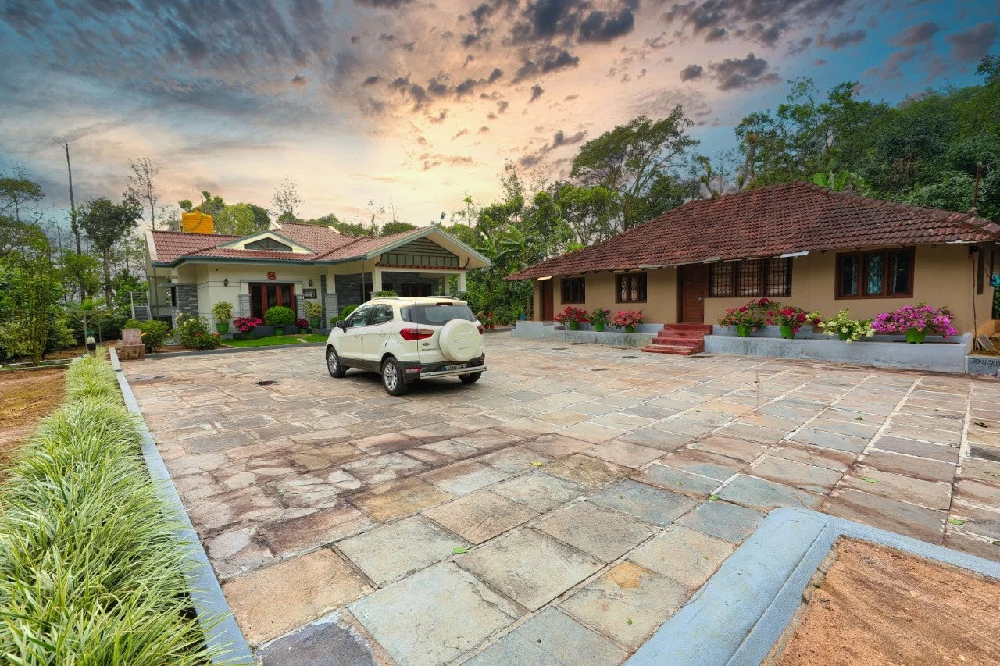

Nearby Chikmagalur places
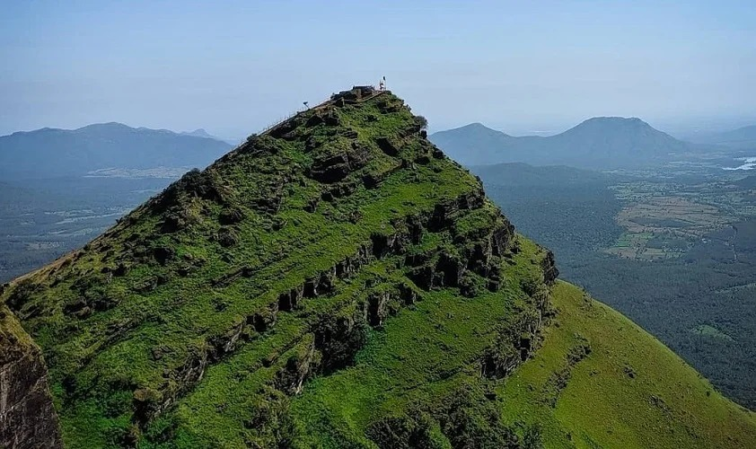
A favourite hill route for viewpoints, cool weather and scenic drives.
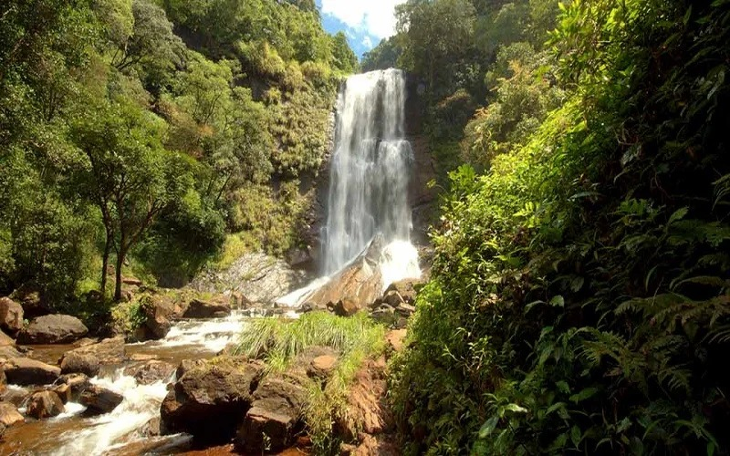
Waterfall day trip option for guests who want a nature-heavy itinerary.
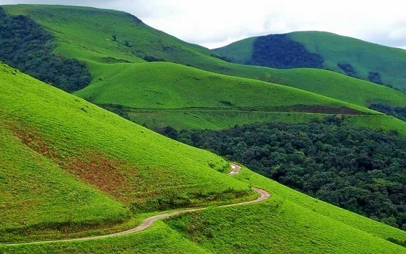
Green hills and viewpoints that pair well with a relaxed estate stay.
Places to visit
Use this as a quick guide while planning. Trek routes, waterfall access and forest timings should be checked before travel.
For fastest reply, send number of guests, check-in date, nights and food preference on WhatsApp.
Guest questions
No. The final package can change by season, weekend demand, number of adults, children, food choice and group size. Call or WhatsApp for the current quote.
Yes. The stay has private bedrooms, attached bathrooms, food options, parking and open spaces that suit families, couples and small groups.
Guided trekking, jeep drive, pickup/drop and vehicle support may be arranged at extra charges depending on availability.
Home-cooked food with local Chikmagalur and South Indian flavours. Vegetarian and non-vegetarian requests should be confirmed before arrival.